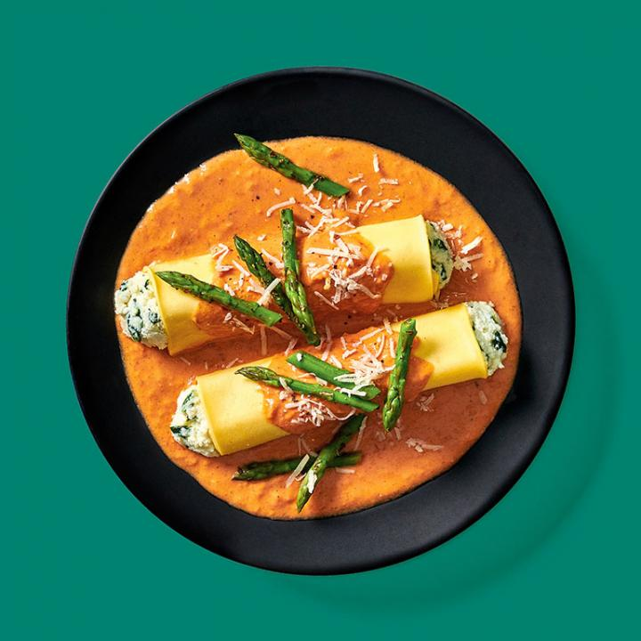
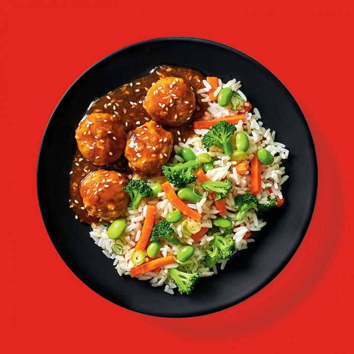
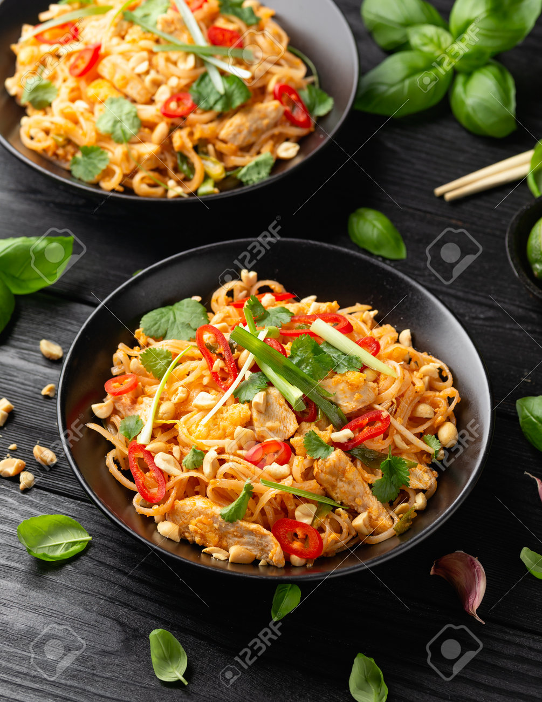
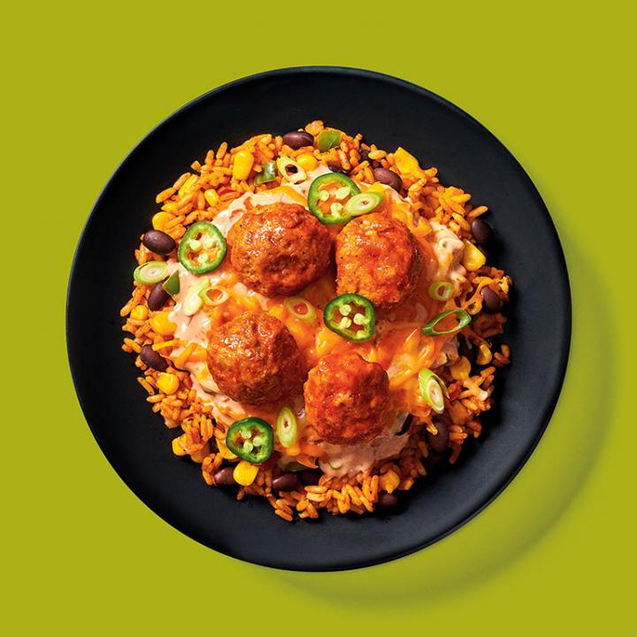
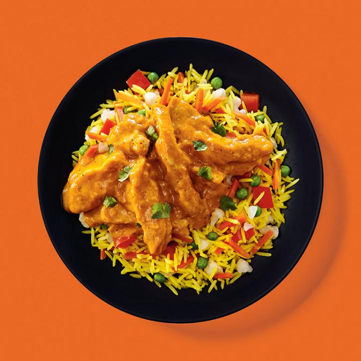

Heroes examples

Plat 1 : Cannelloni sauce rosée
Ce plat est composé de pâtes farcies à la ricotta et aux épinards avec sauce rosée accompagnées d'une garniture d'asperges et de parmesan.

Plat 2 : Boulette général Tao
Ce plat est composé de boulettes de porc et de boeuf servies aux riz blanc, accompagnées d'une sauce aigre-douce au gingembre.

Plat 3 : Pad Thai au poulet
Ce plat est composé d'un sauté au poulet et de légumes sur nouilles asiatiques accompagné d'une sauce au sésame, à l'ail et au soya.

Plat 4 : Casserole Mexicaine
Ce plat est composé de boulettes de porc servies sur un mélange de riz et de légumes, accompagnés de salsa douce, de crème sure et de fromage.

Plat 5 : Poulet au beurre
Ce plat est composé de morceaux de poulet enrobés d'une sauce tomatée aromatisée d'un doux mélange d'épices servis avec riz basmati aux légumes.